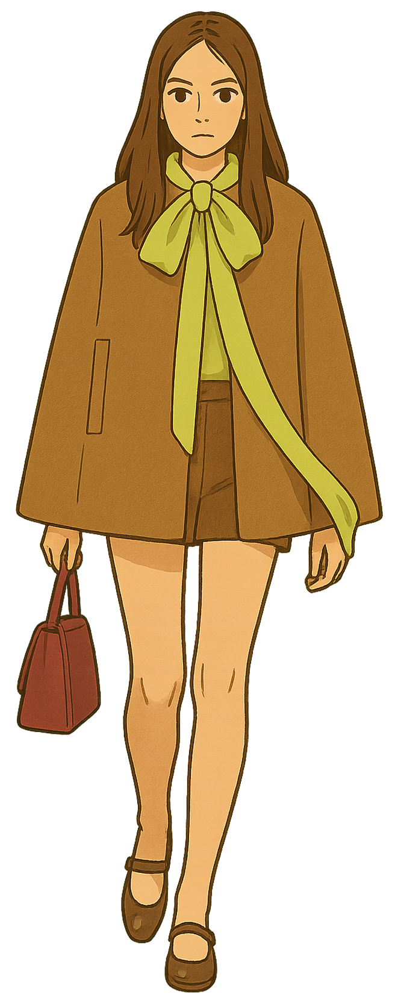
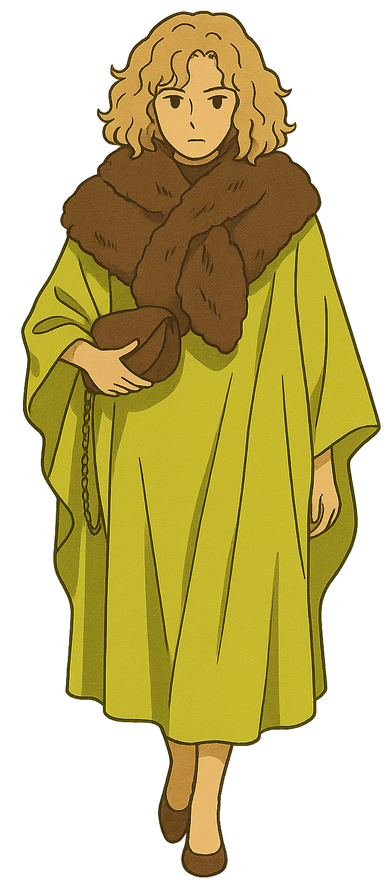
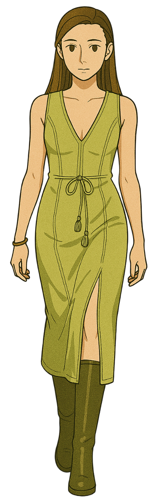

1
PISTACHIO
HUE
부드럽고 차분한 느낌을 주는 피스타치오 색상이
이번 시즌 주목받는 컬러입니다.
그린 계열 특유의 편안함과 함께 은은한 세련미를 더해
다양한 아이템에 활용될 전망입니다.
니트, 코트, 액세서리 등 어디에나 잘 어울려
FW 시즌 룩에 신선함을 불어넣어 줄 것입니다.
TIP
톤온톤 매치로 고급스러움을 강조하거나,
뉴트럴 컬러와 함께 사용하여
부드러운 포인트를 줄 수 있습니다.